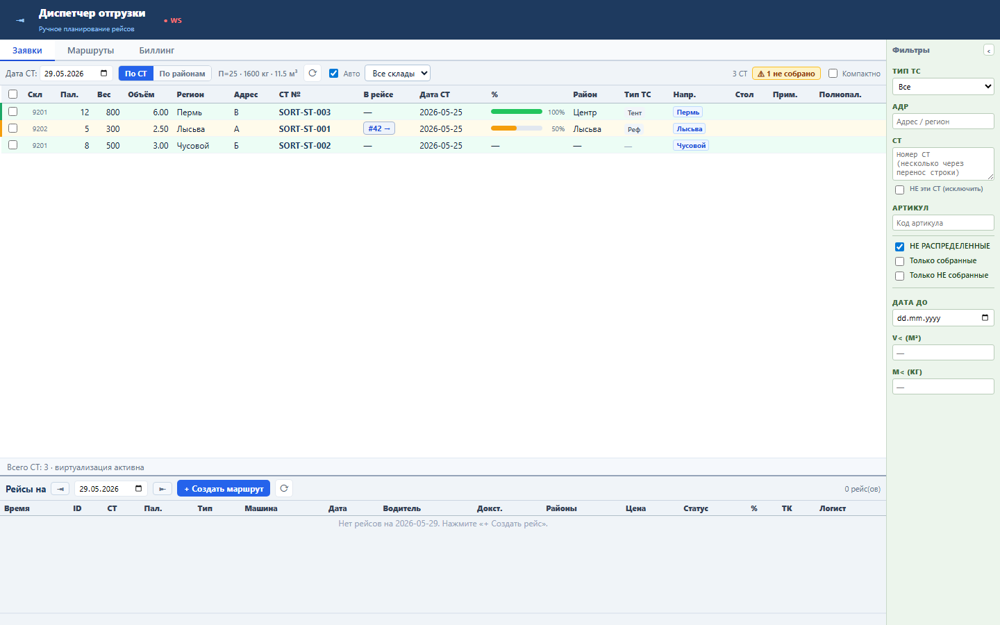
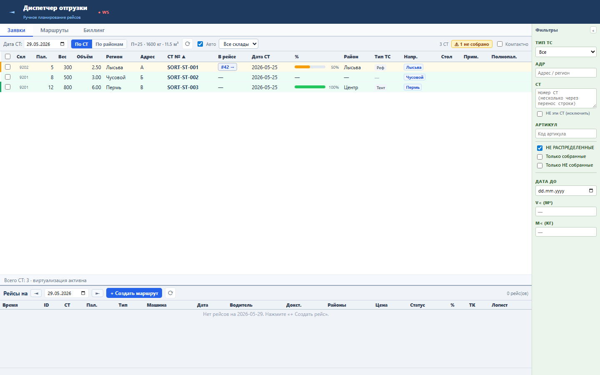
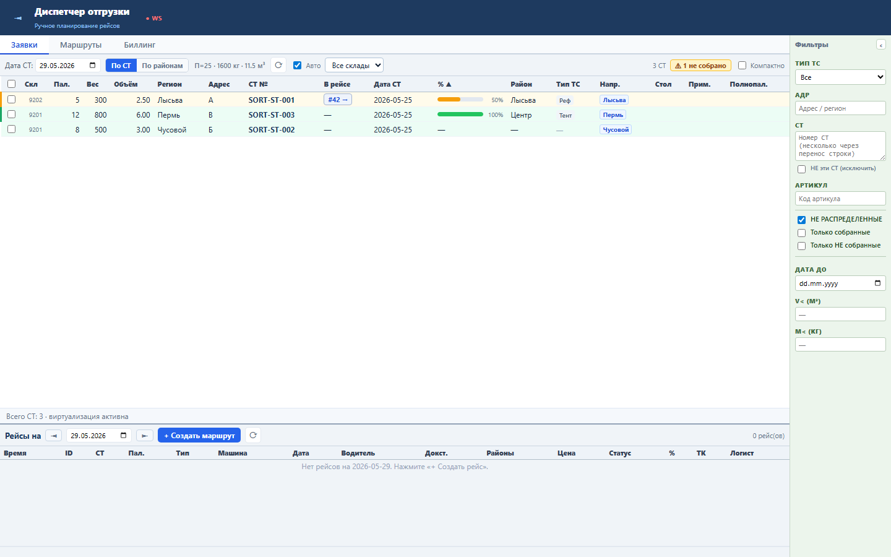

Диспетчер сортирует доступные СТ прямо в таблице, не запрашивая новые данные с сервера.
Клиент хранит stSortField и stSortDir. Повторный клик меняет направление. Пустые значения сортируются последними.
Sprint 52 закрыт functional, load и UI smoke проверками.


